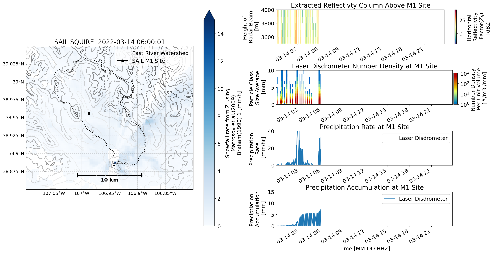

Figures for Presentation in AMS Annual Meeting in Denver 2023#
X-Band Precipitation Estimates for the Surface Atmosphere Integrated Field Laboratory (SAIL) Field Experiment#
Read in the East River Domain file#
east_river = gpd.read_file('../../data/site-locations/East_River.kml')
min_lat = 38.5
max_lat = 39.3
min_lon = -107.45
max_lon = -106.45
####min_lat = 38.71
####max_lat = 39.07
####min_lon = -107.17
####max_lon = -106.71
# zoomed in
zoom_min_lat = 38.85
zoom_max_lat = 39.05
zoom_min_lon = -107.1
zoom_max_lon = -106.80
# create terrain tiles node
node = TerrainTiles(tile_format='geotiff', zoom=10)
# create coordinates to get tiles
c = Coordinates([clinspace(min_lat, max_lat, 1000), clinspace(min_lon, max_lon, 1000)], dims=['lat', 'lon'])
# evaluate node
terrain = node.eval(c)
# Define the splash locations [lon,lat]
kettle_ponds = [-106.9731488, 38.9415427]
brush_creek = [-106.920259, 38.8596282]
avery_point = [-106.9965928, 38.9705885]
pumphouse_site = [-106.9502476, 38.9226741]
M1 = [-106.987, 38.956158]
snodgrass = [-106.978929, 38.926572]
sites = ["AMF2 M1", "Kettle Ponds", "Brush Creek", "Avery Point",
"Pumphouse Site", "Snodgrass"]
# Zip these together!
lons, lats = list(zip(M1,
kettle_ponds,
brush_creek,
avery_point,
pumphouse_site,
snodgrass))
Read the TIF file#
# file obtained from Zach Sherman (zssherman) - to big for github; available on request <obrienj@anl.gov>
tif_file = "/Users/jrobrien/dev/sail-xprecip-radar/data/sail.tif"
Define Helper Functions#
def _generate_title(radar, ds, field, sweep):
""" Generates a title for each plot. """
time_str = ds['time'].data[0]
fixed_angle = radar.fixed_angle['data'][sweep]
line_one = "%.1f Deg. %s " % (fixed_angle, time_str)
field_name = str(field)
field_name = field_name.replace('_', ' ')
field_name = field_name[0].upper() + field_name[1:]
return line_one + '\n' + field_name
def gc_latlon_bear_dist(lat1, lon1, bear, dist):
"""
Input lat1/lon1 as decimal degrees, as well as bearing and distance from
the coordinate. Returns lat2/lon2 of final destination. Cannot be
vectorized due to atan2.
"""
re = 6371.1 # km
lat1r = np.deg2rad(lat1)
lon1r = np.deg2rad(lon1)
bearr = np.deg2rad(bear)
lat2r = np.arcsin((np.sin(lat1r) * np.cos(dist/re)) +
(np.cos(lat1r) * np.sin(dist/re) * np.cos(bearr)))
lon2r = lon1r + atan2(np.sin(bearr) * np.sin(dist/re) *
np.cos(lat1r), np.cos(dist/re) - np.sin(lat1r) *
np.sin(lat2r))
return np.rad2deg(lat2r), np.rad2deg(lon2r)
def add_scale_line(scale, ax, projection, color='k',
linewidth=None, fontsize=None, fontweight=None):
"""
Adds a line that shows the map scale in km. The line will automatically
scale based on zoom level of the map. Works with cartopy.
Parameters
----------
scale : scalar
Length of line to draw, in km.
ax : matplotlib.pyplot.Axes instance
Axes instance to draw line on. It is assumed that this was created
with a map projection.
projection : cartopy.crs projection
Cartopy projection being used in the plot.
Other Parameters
----------------
color : str
Color of line and text to draw. Default is black.
"""
frac_lat = 0.1 # distance fraction from bottom of plot
frac_lon = 0.5 # distance fraction from left of plot
e1 = ax.get_extent()
center_lon = e1[0] + frac_lon * (e1[1] - e1[0])
center_lat = e1[2] + frac_lat * (e1[3] - e1[2])
# Main line
lat1, lon1 = gc_latlon_bear_dist(
center_lat, center_lon, -90, scale / 2.0) # left point
lat2, lon2 = gc_latlon_bear_dist(
center_lat, center_lon, 90, scale / 2.0) # right point
if lon1 <= e1[0] or lon2 >= e1[1]:
warnings.warn('Scale line longer than extent of plot! ' +
'Try shortening for best effect.')
ax.plot([lon1, lon2], [lat1, lat2], linestyle='-',
color=color, transform=projection,
linewidth=linewidth)
# Draw a vertical hash on the left edge
lat1a, lon1a = gc_latlon_bear_dist(
lat1, lon1, 180, frac_lon * scale / 20.0) # bottom left hash
lat1b, lon1b = gc_latlon_bear_dist(
lat1, lon1, 0, frac_lon * scale / 20.0) # top left hash
ax.plot([lon1a, lon1b], [lat1a, lat1b], linestyle='-',
color=color, transform=projection, linewidth=linewidth)
# Draw a vertical hash on the right edge
lat2a, lon2a = gc_latlon_bear_dist(
lat2, lon2, 180, frac_lon * scale / 20.0) # bottom right hash
lat2b, lon2b = gc_latlon_bear_dist(
lat2, lon2, 0, frac_lon * scale / 20.0) # top right hash
ax.plot([lon2a, lon2b], [lat2a, lat2b], linestyle='-',
color=color, transform=projection, linewidth=linewidth)
# Draw scale label
ax.text(center_lon, center_lat - frac_lat * (e1[3] - e1[2]) / 3.0,
str(int(scale)) + ' km', horizontalalignment='center',
verticalalignment='center', color=color, fontweight=fontweight,
fontsize=fontsize)
def plot_eastriver(axs, ncolor, scale_color='black', zoom=False, **kwargs):
# Plot the East River Watershed domain
east_river.plot(ax=axs, linewidth=2, edgecolor=ncolor, facecolor='None', linestyle=':',)
axs.plot(0,
0,
color=ncolor,
linestyle=':',
label='East River Watershed')
plt.legend(loc='upper right',
fontsize=12)
if zoom is True:
plt.xlim(zoom_min_lon, zoom_max_lon)
plt.ylim(zoom_min_lat, zoom_max_lat)
else:
plt.xlim(min_lon, max_lon)
plt.ylim(min_lat, max_lat)
# Add our scale bar
add_scale_line(10.0, axs, projection=ccrs.PlateCarree(),
color=scale_color, linewidth=3,
fontsize=14,
fontweight='bold')
# Add gridlines
gl = axs.gridlines(crs=ccrs.PlateCarree(),
draw_labels=True,
linewidth=1,
color='gray',
alpha=0.3,
linestyle='--')
plt.gca().xaxis.set_major_locator(plt.NullLocator())
# Make sure labels are only plotted on the left and bottom
gl.top_labels = False
gl.right_labels = False
gl.xlabel_style = {'size': 12}
gl.ylabel_style = {'size': 12}
if 'terrain' in kwargs:
elevation_contours = np.arange(2_700, 4_200, 250)
contours = kwargs['terrain'].to_dataset(name='DEM').DEM.plot.contour(levels=elevation_contours, cmap='Greys', alpha=0.6)
axs.clabel(contours, elevation_contours[::2], fontsize=10, inline=1, fmt='%i m', rightside_up=True)
def beam_block(radar, tif_file, radar_height_offset=10.0,
beam_width=1.0):
"""
Beam Block Radar Calculation.
Parameters
----------
radar : Radar
Radar object used.
tif_name : string
Name of geotiff file to use for the
calculation.
radar_height_offset : float
Add height to the radar altitude for radar towers.
Other Parameters
----------------
beam_width : float
Radar's beam width for calculation.
Default value is 1.0.
Returns
-------
pbb_all : array
Array of partial beam block fractions for each
gate in all sweeps.
cbb_all : array
Array of cumulative beam block fractions for
each gate in all sweeps.
References
----------
Bech, J., B. Codina, J. Lorente, and D. Bebbington,
2003: The sensitivity of single polarization weather
radar beam blockage correction to variability in the
vertical refractivity gradient. J. Atmos. Oceanic
Technol., 20, 845–855
Heistermann, M., Jacobi, S., and Pfaff, T., 2013:
Technical Note: An open source library for processing
weather radar data (wradlib), Hydrol. Earth Syst.
Sci., 17, 863-871, doi:10.5194/hess-17-863-2013
Helmus, J.J. & Collis, S.M., (2016). The Python ARM
Radar Toolkit (Py-ART), a Library for Working with
Weather Radar Data in the Python Programming Language.
Journal of Open Research Software. 4(1), p.e25.
DOI: http://doi.org/10.5334/jors.119
"""
# Opening the tif file and getting the values ready to be
# converted into polar values.
rasterfile = tif_file
data_raster = wrl.io.open_raster(rasterfile)
rastervalues, rastercoords, proj = wrl.georef.extract_raster_dataset(
data_raster, nodata=None)
#rastervalues_, rastercoords_, proj = wrl.georef.extract_raster_dataset(data_raster, nodata=-32768.)
sitecoords = (np.float(radar.longitude['data']),
np.float(radar.latitude['data']),
np.float(radar.altitude['data'] + radar_height_offset))
pbb_arrays = []
cbb_arrays = []
_range = radar.range['data']
beamradius = wrl.util.half_power_radius(_range, beam_width)
# Cycling through all sweeps in the radar object.
print('Calculating beam blockage.')
del data_raster
for i in range(len(radar.sweep_start_ray_index['data'])):
index_start = radar.sweep_start_ray_index['data'][i]
index_end = radar.sweep_end_ray_index['data'][i] + 1
elevs = radar.elevation['data'][index_start:index_end]
azimuths = radar.azimuth['data'][index_start:index_end]
rg, azg = np.meshgrid(_range, azimuths)
rg, eleg = np.meshgrid(_range, elevs)
nrays = azimuths.shape[0] # number of rays
nbins = radar.ngates # number of range bins
bw = beam_width # half power beam width (deg)
range_res = 60. # range resolution (meters)
el = radar.fixed_angle['data'][i]
coord = wrl.georef.sweep_centroids(nrays, range_res, nbins, el)
coords = wrl.georef.spherical_to_proj(rg, azg, eleg,
sitecoords, proj=proj)
lon = coords[..., 0]
lat = coords[..., 1]
alt = coords[..., 2]
polcoords = coords[..., :2]
rlimits = (lon.min(), lat.min(), lon.max(), lat.max())
#Clip the region inside our bounding box
ind = wrl.util.find_bbox_indices(rastercoords, rlimits)
rastercoords = rastercoords[ind[0]:ind[3], ind[0]:ind[2], ...]
rastervalues = rastervalues[ind[0]:ind[3], ind[0]:ind[2]]
polarvalues = wrl.ipol.cart_to_irregular_spline(
rastercoords, rastervalues, polcoords, order=3,
prefilter=False)
# Calculate partial beam blockage using wradlib.
pbb = wrl.qual.beam_block_frac(polarvalues, alt, beamradius)
pbb = np.ma.masked_invalid(pbb)
pbb[pbb < 0] = 0.0
pbb[pbb > 1] = 1.0
pbb_arrays.append(pbb)
# Calculate cumulative beam blockage using wradlib.
cbb = wrl.qual.cum_beam_block_frac(pbb)
cbb_arrays.append(cbb)
pbb_all = np.ma.concatenate(pbb_arrays)
cbb_all = np.ma.concatenate(cbb_arrays)
return pbb_all, cbb_all
def sail_mosaic(nradar, column, accum):
"""
CMAC processed XPrecipRadar file and corresponding RadCLss Column for a given date.
Moasic is nested list containing one main plot, with 4 side plots
Parameters
----------
radar : str
Path to radar file wished to be displayed in 'Main' subplot
column : RadClss column, Xarray Datset
RadCLss product for a given date.
Returns
-------
fig : matplotlib figure
Matplotlib Mosaic figure
"""
# Read in the radar file
radar = pyart.io.read(nradar)
# Extract the 3rd sweep for PPI plot; blocked by mountains
radar0 = radar.extract_sweeps([2])
# Create the display object from radar file
display = pyart.graph.RadarMapDisplay(radar0)
# define max/min time from the extracted column
time_max = column.time.data[-1]
time_min = column.time.data[0]
# define the radar time
#radar_time = pd.to_datetime(radar.time['units'].split(' ')[-1][:-1])
radar_time = pd.to_datetime(radar.time['data'][0], unit='s', origin='unix')
print(radar_time)
# Define the lat/lon from sweep 0 for projection plotting
lats, lons, alt = radar0.get_gate_lat_lon_alt(0)
# Define reflecitivty data from sweep 0 to display
reflectivity = radar0.fields['corrected_reflectivity']['data']
# Define Site Location
site_lat = 38.9267
site_lon = -106.987
##date_form = DateFormatter("%H%M UTC %b %d %Y")
#---------------------------------------------------
# Define the GridSpec for Detailed Subplot Placement
#---------------------------------------------------
fig = plt.figure(figsize=(16, 8))
gs0 = gridspec.GridSpec(1, 2, figure=fig)
gs00 = gs0[1].subgridspec(4, 1, hspace=0.775)
# update the extent of the subplot
gs0.update(top=.90, bottom=0.1, left=0.1, right=.95)
#-------------------
# Plot the SAIL PPI
#-------------------
ax1 = fig.add_subplot(gs0[0], projection=ccrs.PlateCarree())
# Create the Radar Display Object
display = pyart.graph.RadarMapDisplay(radar)
# Plot the velocity texture
display.plot_ppi_map('corrected_reflectivity',
ax=ax1,
sweep=3,
vmin=-20,
vmax=45,
lat_lines=None,
lon_lines=None,
min_lat=zoom_min_lat,
max_lat=zoom_max_lat,
min_lon=zoom_min_lon,
max_lon=zoom_max_lon,
ticklabs='',
embellish=False,
norm=None,
cmap="Spectral_r")
# Plot the East River Domain
plot_eastriver(ax1, 'black', zoom=True)
# Add site of interest
ax1.plot(-106.987, 38.9267,
color='black', linewidth=2, marker='o',
transform=ccrs.PlateCarree(),
label="SAIL M1 Site"
)
# add a legend
ax1.legend(loc='upper right')
#--------------------------------------------
# Side Plot A - Column Extract - Reflectivity
#--------------------------------------------
print(column.time.data[0])
print(radar_time)
ax2 = fig.add_subplot(gs00[0])
label2 = "Horizontal \n Reflectivity \n Factor" + r"($Z_h$)" + "\n" + "[dBZ]"
reflect = column.sel(site='M1').sel(time=slice(column.time.data[0],
radar_time)).corrected_reflectivity.plot(x='time',
ax=ax2,
cmap='Spectral_r',
add_colorbar=True,
vmin=-20,
vmax=45,
cbar_kwargs={'label': label2})
ax2.set_xlabel(' ')
ax2.set_ylabel('Height of \n Radar Beam \n [m]')
ax2.set_title("Extracted Reflectivty Column Above M1 Site")
ax2.set_xlim(time_min, time_max)
ax2.set_ylim([3500, 4000])
#----------------------------------------
# Side Plot B - Laser Disdromter - PSD
#----------------------------------------
ax3 = fig.add_subplot(gs00[1])
norm = colors.LogNorm(vmin=1, vmax=1000)
"""
label3 = "Doppler Velocities" + "\n" + r"($Z_h$)" + "\n" + "[dBZ]"
column.sel(site='M1').sel(time=slice(column.time.data[0],
radar_time)).corrected_velocity.plot(x='time',
ax=ax3,
add_colorbar=True,
vmin=-10,
vmax=10,
cbar_kwargs={'label': "This is the new label2"})
ax3.set_ylabel('Height of \n Radar Beam \n [m]')
ax3.set_xlabel(' ')
ax3.set_title("Extracted Doppler Velocity Above M1 Site")
ax3.set_xlim(time_min, time_max)
ax3.set_ylim([3000, 6500])
"""
psd = column.sel(site="M1").sel(time=slice(column.time.data[0],
radar_time)).number_density_drops.plot(x='time',
norm=norm,
cmap='pyart_HomeyerRainbow',
add_colorbar=False,
ax=ax3)
divider = make_axes_locatable(ax3)
cax = divider.append_axes("right", size="3%", pad=1.05)
cax.set_visible(False)
#cbax = divider.append_axes("right", size="3%")
cbax = fig.add_axes([0.89, 0.55, 0.007, 0.115])
cbar2 = fig.colorbar(psd, orientation="vertical", cax=cbax)
cbar2.set_label('Number Density \n Per Unit Volume \n [#/m3 /mm]')
#ax4.sharex(axd['SideA'])
ax3.set_title("Laser Disdrometer Number Density at M1 Site")
ax3.set_ylabel("Particle Class \n Size Average \n [mm]")
ax3.set_xlabel(" ")
ax3.set_xlim(time_min, time_max)
ax3.set_ylim(0, 10)
#------------------------------------------------------
# Side Plot C - Laser Disdrometer - Precipitation Rate
#------------------------------------------------------
ax5 = fig.add_subplot(gs00[2])
column.sel(site="M1").sel(time=slice(column.time.data[0],
radar_time)).precip_rate.plot(x='time',
ax=ax5,
label='Laser Disdrometer')
#column.sel(site='M1').sel(time=slice(column.time.data[0],
# radar_time)).accum_rtnrt.plot(x='time',
# ax=ax5,
# label='Pluvio Weighing Bucket')
#column.sel(site="M1").isel(height=4).sel(time=slice(column.time.data[0],
# radar_time)).snow_rate_m2009_1.plot(x='time',
# ax=ax5,
# label='Braham 1990 #1')
ax5.set_title("Precipitation Rate at M1 Site")
ax5.set_xlabel(" ")
ax5.set_ylabel("Precipitation \n Rate \n [mm/hr]")
divider = make_axes_locatable(ax5)
cax = divider.append_axes("right", size="3%", pad=1.05)
cax.set_visible(False)
#ax5.xaxis.set_major_formatter(date_form)
ax5.set_xlim(time_min, time_max)
ax5.set_ylim([0, 40])
ax5.legend()
#-------------------------------------------------------------
# Side Plot D - Laser Disdrometer - Precipitation Accumulation
#-------------------------------------------------------------
ax6 = fig.add_subplot(gs00[3])
accum['ld'].sel(time=slice(accum['ld'].time.data[0],
radar_time)).plot(x='time',
ax=ax6,
label='Laser Disdrometer')
#accum['radar'].snow_rate_m2009_1_accumulated.sel(time=slice(accum['radar'].time.data[0],
# radar_time)).plot(x='time',
# ax=ax6,
# label='Braham 1990 #1',
# add_legend=True)
#accum['pluvio'].sel(time=slice(accum['pluvio'].time.data[0],
# radar_time)).plot(x='time',
# ax=ax6,
# label='Pluvio Weighing Bucket')
divider = make_axes_locatable(ax6)
cax = divider.append_axes("right", size="3%", pad=1.05)
cax.set_visible(False)
ax6.set_xlim(time_min, time_max)
ax6.set_title("Precipitation Accumulation at M1 Site")
ax6.set_xlabel("Time [MM-DD HHZ]")
ax6.set_ylabel("Preciptiation \n Accumulation \n [mm]")
ax6.set_ylim([0, 15])
ax6.legend()
return fig
def squire_grid(ds, fig, tt, *args, **kwargs):
#-----------------
# Gridspec Setup
#-----------------
# Set up the figure
myf = fig
gs0 = gridspec.GridSpec(1, 2, figure=myf)
gs00 = gs0[1].subgridspec(4, 1, hspace=0.775)
# update the extent of the subplot
gs0.update(top=.90, bottom=0.1, left=0.1, right=.95)
#----------------------
# Plot the SQUIRE data
#----------------------
ax1 = fig.add_subplot(gs0[0], projection=ccrs.PlateCarree())
# Select the time for input frame; subset snowfall rate DataArray
da = ds['snow_rate_m2009_1'].isel(time=tt).load()
# Define Site Location
site_lat = 38.9267
site_lon = -106.987
# Use inherent xarray plotting, pass subplot argument
da.plot(x='lon',
y='lat',
cmap='Blues',
vmin=0,
vmax=15,
ax=ax1)
# Call our East River domain plot
plot_eastriver(ax1, ncolor='black', zoom=True, terrain=terrain)
# Add site of interest
ax1.plot(-106.987, 38.956158,
color='black', linewidth=2, marker='o',
transform=ccrs.PlateCarree(),
label="SAIL M1 Site"
)
# add a legend
ax1.legend(loc='upper right')
ax1.set_title('SAIL SQUIRE ' + str(pd.to_datetime(combined_data.time.isel(time=tt).data)))
#--------------------------------------------
# Side Plot A - Column Extract - Reflectivity
#--------------------------------------------
ax2 = fig.add_subplot(gs00[0])
label2 = "Horizontal \n Reflectivity \n Factor" + r"($Z_h$)" + "\n" + "[dBZ]"
if tt > 1:
da_A = ds['corrected_reflectivity'].isel(time=slice(0, tt)).sel(x=0).sel(y=0)
da_A.plot(x='time',
ax=ax2,
cmap='Spectral_r',
add_colorbar=True,
vmin=-20,
vmax=45,
cbar_kwargs={'label': label2}
)
ax2.set_xlabel(' ')
ax2.set_ylabel('Height of \n Radar Beam \n [m]')
ax2.set_title("Extracted Reflectivty Column Above M1 Site")
ax2.set_xlim(ds['time'].isel(time=0).data, ds['time'].isel(time=-1).data)
ax2.set_ylim([3500, 4000])
#----------------------------------------
# Side Plot B - Laser Disdromter - PSD
#----------------------------------------
ax3 = fig.add_subplot(gs00[1])
norm = colors.LogNorm(vmin=1, vmax=1000)
if tt > 1:
da_B = ds['number_density_drops'].isel(time=slice(0, tt)).sel(x=0).sel(y=0).fillna(-100)
psd = da_B.plot(x='time',
norm=norm,
cmap='pyart_HomeyerRainbow',
add_colorbar=False,
ax=ax3
)
divider = make_axes_locatable(ax3)
cax = divider.append_axes("right", size="3%", pad=1.05)
cax.set_visible(False)
cbax = fig.add_axes([0.89, 0.55, 0.007, 0.115])
cbar2 = fig.colorbar(psd, orientation="vertical", cax=cbax)
cbar2.set_label('Number Density \n Per Unit Volume \n [#/m3 /mm]')
ax3.set_title("Laser Disdrometer Number Density at M1 Site")
ax3.set_ylabel("Particle Class \n Size Average \n [mm]")
ax3.set_xlabel(" ")
ax3.set_xlim(ds['time'].isel(time=0).data, ds['time'].isel(time=-1).data)
ax3.set_ylim(0, 10)
#------------------------------------------------------
# Side Plot C - Laser Disdrometer - Precipitation Rate
#------------------------------------------------------
ax5 = fig.add_subplot(gs00[2])
if tt > 1:
da_C = ds['precip_rate'].isel(time=slice(0, tt)).sel(x=0).sel(y=0).fillna(0)
da_C.plot(x='time',
ax=ax5,
label='Laser Disdrometer')
ax5.set_title("Precipitation Rate at M1 Site")
ax5.set_xlabel(" ")
ax5.set_ylabel("Precipitation \n Rate \n [mm/hr]")
divider = make_axes_locatable(ax5)
cax = divider.append_axes("right", size="3%", pad=1.05)
cax.set_visible(False)
ax5.set_xlim(ds['time'].isel(time=0).data, ds['time'].isel(time=-1).data)
ax5.set_ylim([0, 40])
ax5.legend()
#-------------------------------------------------------------
# Side Plot D - Laser Disdrometer - Precipitation Accumulation
#-------------------------------------------------------------
ax6 = fig.add_subplot(gs00[3])
if tt > 1:
da_D = ds['precip_rate_accumulated'].isel(time=slice(0, tt)).fillna(0)
da_D.plot(x='time',
ax=ax6,
label='Laser Disdrometer')
divider = make_axes_locatable(ax6)
cax = divider.append_axes("right", size="3%", pad=1.05)
cax.set_visible(False)
ax6.set_xlim(ds['time'].isel(time=0).data, ds['time'].isel(time=-1).data)
ax6.set_title("Precipitation Accumulation at M1 Site")
ax6.set_xlabel("Time [MM-DD HHZ]")
ax6.set_ylabel("Preciptiation \n Accumulation \n [mm]")
ax6.set_ylim([0, 15])
ax6.legend()
# XMovie throws errors if this isn't included
return None, None
A) RadCLss Input and Snowfall Accumulation#
# grab a cmac file to overlay on-top of
#radar = pyart.io.read('/gpfs/wolf/atm124/proj-shared/gucxprecipradarcmacS2.c1/ppi/202203/gucxprecipradarcmacS2.c1.20220314.024759.nc')
radar = pyart.io.read('/Users/jrobrien/ARM/data/CSU-XPrecipRadar/cmac2/gucxprecipradarcmacM1.c1.20220314-024759.nc')
# Grab a RadCLss file
rad_ds = xr.open_dataset('/Users/jrobrien/ARM/data/CSU-XPrecipRadar/radclss/202203/xprecipradarradclss.c2.20220314.000000.nc')
rad_ds
<xarray.Dataset>
Dimensions: (time: 200, height: 70, site: 8,
particle_size: 32,
raw_fall_velocity: 32)
Coordinates:
* time (time) datetime64[ns] 2022-03-1...
* height (height) float64 3.149e+03 ... ...
* site (site) object 'M1' ... 'snodgrass'
* particle_size (particle_size) float32 0.062 ....
* raw_fall_velocity (raw_fall_velocity) float32 0.0...
Data variables: (12/121)
DBZ (time, height, site) float64 ...
VEL (time, height, site) float64 ...
WIDTH (time, height, site) float64 ...
ZDR (time, height, site) float64 ...
PHIDP (time, height, site) float64 ...
RHOHV (time, height, site) float64 ...
... ...
v_wind (time, site) float64 ...
wstat (time, site) float64 ...
asc (time, site) float64 ...
lat (time, site) float64 ...
lon (time, site) float64 ...
alt (time, site) float64 ...
Attributes: (12/24)
command_line:
Conventions: ARM-1.3 CF/Radial instrument_parameters
process_version:
dod_version:
input_datastreams:
site_id:
... ...
developers: Joseph O'Brien, ANL. Maxwell Grover, ANL. Robert J...
translator: https://www.arm.gov/capabilities/instruments/xprec...
mentors: https://www.arm.gov/connect-with-arm/organization/...
source: Colorado State University's X-Band Precipitation R...
field_names: DBZ, VEL, WIDTH, ZDR, PHIDP, RHOHV, NCP, DBZhv, cb...
history: rad_2 = rad_ds.resample(time='1Min', closed='right').asfreq()
rad_3 = rad_ds.resample(time='1Min', closed='right').interpolate(kind='nearest')
ld_precip_accum = act.utils.accumulate_precip(rad_2.sel(site='M1'), 'precip_rate').precip_rate_accumulated.compute()
gauge_precip_accum = act.utils.accumulate_precip(rad_2.sel(site='M1'), 'intensity_rtnrt').intensity_rtnrt_accumulated.compute()
radar_accum = act.utils.accumulate_precip(rad_3.sel(site='M1').isel(height=4), 'snow_rate_m2009_1').compute()
#radar_acum_2 = radar_accum.snow_rate_m2009_1_accumulated.data / 12
ld_match = ld_precip_accum.resample(time='5Min',
closed='right').mean(keep_attrs=True).interp(time=rad_ds.time,
method='linear')
pluvio_match = gauge_precip_accum.resample(time='5Min',
closed='right').mean(keep_attrs=True).interp(time=rad_ds.time,
method='linear')
radar_match = radar_accum.resample(time='5Min',
closed='right').mean(keep_attrs=True).interp(time=rad_ds.time,
method='linear')
radar_match.snow_rate_m2009_1_accumulated.data = radar_match.snow_rate_m2009_1_accumulated.data / 12
accum = {'ld' : ld_match, 'pluvio' : pluvio_match, 'radar' : radar_match}
B) RadCLss Location Figure#
fig = plt.figure(figsize=(16, 8))
axs = plt.subplot(111, projection=ccrs.PlateCarree())
# Create the Radar Display Object
display = pyart.graph.RadarMapDisplay(radar)
# Plot the velocity texture
display.plot_ppi_map('corrected_reflectivity',
ax=axs,
sweep=3,
vmin=-20,
vmax=45,
lat_lines=None,
lon_lines=None,
min_lat=zoom_min_lat,
max_lat=zoom_max_lat,
min_lon=zoom_min_lon,
max_lon=zoom_max_lon,
ticklabs='',
embellish=False,
norm=None,
cmap="Spectral_r")
# Plot the sites!
ncolors = ['blue', 'black', 'green', 'fuchsia', 'purple', 'cyan']
i = 0
for nsite in sites:
axs.scatter(lons[i], lats[i], c=ncolors[i], s=60, marker='d', label=nsite)
i += 1
# Plot the East River Watershed domain
plot_eastriver(axs, 'black', zoom=True)
# Save the figure
plt.savefig('OBRIEN_AMS2023_RadCLss_Locations.png')
C) RadCLss RHI View#
Use pyart.util.columnsect functions (used in RadClSS) to find rays over M1 site.#
col_rays = pyart.util.get_column_rays(radar, 309.5)
column = pyart.util.get_field_location(radar, lats[0], lons[0])
# create new figure
fig2, ax2 = plt.subplots(1, 1, figsize=[10, 10])
# create a pyart display object
display = pyart.graph.RadarDisplay(radar)
display.plot_azimuth_to_rhi('corrected_reflectivity',
309.5,
ax=ax2,
vmin=-20,
vmax=45,
cmap='Spectral_r')
# convert heights to km and subtract altitude of the radar
heights = (radar.fields['height']['data'] - radar.altitude['data'][0]) / 1000
# Loop over the rays corresponding to the ones of the M1 site
for ray in col_rays:
nlabel = str(int(np.round(radar.elevation['data'][ray]))) + r"$^\circ$" + "Elevation"
ax2.plot((radar.range['data'][:] / 1000), heights[ray, :], label=nlabel)
# mark where the M1 site is
ax2.axvline(4.926, color='black')
# set limits
ax2.set_xlim([0, 10])
ax2.set_ylim([0, 3])
# create a legend
ax2.legend()
# save figure
plt.savefig("OBRIEN_AMS2023_RadClSS_ColumnExtract.png")
D) Extra RHI View with terrain plot#
# Opening the tif file and getting the values ready to be
# converted into polar values.
rasterfile = tif_file
data_raster = wrl.io.open_raster(rasterfile)
rastervalues, rastercoords, proj = wrl.georef.extract_raster_dataset(
data_raster, nodata=None)
#rastervalues_, rastercoords_, proj = wrl.georef.extract_raster_dataset(data_raster, nodata=-32768.)
sitecoords = (np.float(radar.longitude['data']),
np.float(radar.latitude['data']),
np.float(radar.altitude['data']) + 10.0)
beam_width = 1.0
_range = radar.range['data']
#beam_width = np.float(radar.instrument_parameters[
#'radar_beam_width_v']['data'])
beamradius = wrl.util.half_power_radius(_range, beam_width)
range_res = radar.range['data'][1] - radar.range['data'][0]
nrays = radar.nrays
nbins = radar.ngates
elev = radar.elevation['data']
azimuths = radar.azimuth['data']
rg, azg = np.meshgrid(_range, azimuths)
rg, eleg = np.meshgrid(_range, elev)
coord = wrl.georef.sweep_centroids(nrays, range_res, nbins, eleg)
coords = wrl.georef.spherical_to_proj(rg, azg, eleg,
sitecoords, proj=proj)
lon = coords[..., 0]
lat = coords[..., 1]
alt = coords[..., 2]
polcoords = coords[..., :2]
rlimits = (lon.min(), lat.min(), lon.max(), lat.max())
#Clip the region inside our bounding box
ind = wrl.util.find_bbox_indices(rastercoords, rlimits)
rastercoords = rastercoords[ind[0]:ind[3], ind[0]:ind[2], ...]
rastervalues = rastervalues[ind[0]:ind[3], ind[0]:ind[2]]
polarvalues = wrl.ipol.cart_to_irregular_spline(
rastercoords, rastervalues, polcoords, order=3,
prefilter=False)
fig3, ax3 = plt.subplots(1, figsize=[12, 8])
npolar = (polarvalues[977, :] - radar.altitude['data'][0]) / 1000
# create a pyart display object
display = pyart.graph.RadarDisplay(radar)
display.plot_azimuth_to_rhi('corrected_reflectivity',
309.5,
ax=ax3,
vmin=-20,
vmax=45,
cmap='Spectral_r')
# convert heights to km and subtract altitude of the radar
heights = (radar.fields['height']['data'] - radar.altitude['data'][0]) / 1000
# Loop over the rays corresponding to the ones of the M1 site
for ray in col_rays:
nlabel = str(int(np.round(radar.elevation['data'][ray]))) + r"$^\circ$" + "Elevation"
ax3.plot((radar.range['data'][:] / 1000), heights[ray, :], label=nlabel)
# mark where the M1 site is
ax3.axvline(4.926, color='black')
# set limits
ax3.set_xlim([0, 10])
ax3.set_ylim([-0.1, 3])
# create a legend
ax3.legend()
ax3.fill_between((radar.range['data'] / 1000),
-1,
npolar,
color='0.45',
zorder=2.6,
interpolate=True)
plt.ylim(-.25, 3)
plt.xlim(0, 10)
# save figure
plt.savefig("OBRIEN_AMS2023_RadClSS_ColumnExtract_withTerrain.png")
E) SAIL CMAC/RadCLss Mosaic#
# Grab all locally stored files
file_list = sorted(glob.glob("/Users/jrobrien/ARM/data/CSU-XPrecipRadar/cmac2/gucxprecipradarcmacM1.c1.20220314*"))
file_list[:10]
['/Users/jrobrien/ARM/data/CSU-XPrecipRadar/cmac2/gucxprecipradarcmacM1.c1.20220314-000239.nc',
'/Users/jrobrien/ARM/data/CSU-XPrecipRadar/cmac2/gucxprecipradarcmacM1.c1.20220314-001319.nc',
'/Users/jrobrien/ARM/data/CSU-XPrecipRadar/cmac2/gucxprecipradarcmacM1.c1.20220314-003439.nc',
'/Users/jrobrien/ARM/data/CSU-XPrecipRadar/cmac2/gucxprecipradarcmacM1.c1.20220314-004519.nc',
'/Users/jrobrien/ARM/data/CSU-XPrecipRadar/cmac2/gucxprecipradarcmacM1.c1.20220314-005039.nc',
'/Users/jrobrien/ARM/data/CSU-XPrecipRadar/cmac2/gucxprecipradarcmacM1.c1.20220314-011159.nc',
'/Users/jrobrien/ARM/data/CSU-XPrecipRadar/cmac2/gucxprecipradarcmacM1.c1.20220314-013839.nc',
'/Users/jrobrien/ARM/data/CSU-XPrecipRadar/cmac2/gucxprecipradarcmacM1.c1.20220314-015439.nc',
'/Users/jrobrien/ARM/data/CSU-XPrecipRadar/cmac2/gucxprecipradarcmacM1.c1.20220314-021039.nc',
'/Users/jrobrien/ARM/data/CSU-XPrecipRadar/cmac2/gucxprecipradarcmacM1.c1.20220314-021559.nc']
# Plot the radar loop
#%%time
##for file in file_list[1:]:
## if file[-3:] != "MDM":
## figB = sail_mosaic(file, rad_ds, accum)
## nout = 'SAIL_Mosaic_' + file.split('/')[-1] +'.png'
## print(nout)
## figB.savefig(nout)
## plt.close(figB)
F) SAIL SQUIRE/RadCLss Mosaic#
# Grab all locally stored SQUIRE files
squire_list = sorted(glob.glob("/Users/jrobrien/ARM/data/CSU-XPrecipRadar/squire/gucxprecipradarsquireM1.c1.20220314*"))
file_list[:10]
['/Users/jrobrien/ARM/data/CSU-XPrecipRadar/cmac2/gucxprecipradarcmacM1.c1.20220314-000239.nc',
'/Users/jrobrien/ARM/data/CSU-XPrecipRadar/cmac2/gucxprecipradarcmacM1.c1.20220314-001319.nc',
'/Users/jrobrien/ARM/data/CSU-XPrecipRadar/cmac2/gucxprecipradarcmacM1.c1.20220314-003439.nc',
'/Users/jrobrien/ARM/data/CSU-XPrecipRadar/cmac2/gucxprecipradarcmacM1.c1.20220314-004519.nc',
'/Users/jrobrien/ARM/data/CSU-XPrecipRadar/cmac2/gucxprecipradarcmacM1.c1.20220314-005039.nc',
'/Users/jrobrien/ARM/data/CSU-XPrecipRadar/cmac2/gucxprecipradarcmacM1.c1.20220314-011159.nc',
'/Users/jrobrien/ARM/data/CSU-XPrecipRadar/cmac2/gucxprecipradarcmacM1.c1.20220314-013839.nc',
'/Users/jrobrien/ARM/data/CSU-XPrecipRadar/cmac2/gucxprecipradarcmacM1.c1.20220314-015439.nc',
'/Users/jrobrien/ARM/data/CSU-XPrecipRadar/cmac2/gucxprecipradarcmacM1.c1.20220314-021039.nc',
'/Users/jrobrien/ARM/data/CSU-XPrecipRadar/cmac2/gucxprecipradarcmacM1.c1.20220314-021559.nc']
squire = xr.open_mfdataset(squire_list)
# Add x,y coordinates to RadCLss in order to add to the SQUIRE DataSet
rad_ds = rad_ds.expand_dims('x')
rad_ds = rad_ds.expand_dims('y')
rad_ds = rad_ds.assign_coords(coords=dict(x=[0]))
rad_ds = rad_ds.assign_coords(coords=dict(y=[0]))
# Combine SQUIRE, RadCLss and Accummulation dataset
combined_data = xr.merge([squire, rad_ds.sel(site='M1')['corrected_reflectivity']])
combined_data = xr.merge([combined_data, rad_ds.sel(site='M1')['number_density_drops']])
combined_data = xr.merge([combined_data, rad_ds.sel(site='M1')['precip_rate']])
combined_data = xr.merge([combined_data, accum['ld']])
combined_data
<xarray.Dataset>
Dimensions: (time: 400, y: 161, x: 161, height: 70,
particle_size: 32)
Coordinates:
* time (time) datetime64[ns] 2022-03-14T00:02:39 ... 20...
* y (y) float64 -2e+04 -1.975e+04 ... 1.975e+04 2e+04
* x (x) float64 -2e+04 -1.975e+04 ... 1.975e+04 2e+04
* height (height) float64 3.149e+03 3.249e+03 ... 1.005e+04
* particle_size (particle_size) float32 0.062 0.187 ... 21.5 24.0
lat (y) float64 dask.array<chunksize=(161,), meta=np.ndarray>
lon (x) float64 dask.array<chunksize=(161,), meta=np.ndarray>
z (time, y, x) float64 dask.array<chunksize=(2, 161, 161), meta=np.ndarray>
site <U2 'M1'
Data variables:
DBZ (time, y, x) float64 dask.array<chunksize=(2, 161, 161), meta=np.ndarray>
corrected_reflectivity (time, y, x, height) float64 nan nan ... nan nan
rain_rate_A (time, y, x) float64 dask.array<chunksize=(2, 161, 161), meta=np.ndarray>
snow_rate_ws88diw (time, y, x) float64 dask.array<chunksize=(2, 161, 161), meta=np.ndarray>
snow_rate_m2009_1 (time, y, x) float64 dask.array<chunksize=(2, 161, 161), meta=np.ndarray>
snow_rate_m2009_2 (time, y, x) float64 dask.array<chunksize=(2, 161, 161), meta=np.ndarray>
snow_rate_ws2012 (time, y, x) float64 dask.array<chunksize=(2, 161, 161), meta=np.ndarray>
lowest_height (time, y, x) float64 dask.array<chunksize=(2, 161, 161), meta=np.ndarray>
number_density_drops (y, x, time, particle_size) float64 nan nan ... nan
precip_rate (y, x, time) float64 nan nan nan ... nan nan nan
precip_rate_accumulated (time) float64 nan 0.01614 nan ... 8.093 nan nan
Attributes: (12/23)
command_line:
Conventions: ARM-1.3 CF/Radial instrument_parameters
process_version:
dod_version:
site_id:
platform_id:
... ...
translator: https://www.arm.gov/capabilities/instruments/xprec...
mentors: https://www.arm.gov/connect-with-arm/organization/...
source: Colorado State University's X-Band Precipitation R...
input_datastreams: xprecipradarcmacppi.c1
fields: DBZ, corrected_reflectivity, time, lowest_height, ...
history: Try XMovie#
# Build the movie with 'XMovie'
mov_parallel = Movie(combined_data,
squire_grid,
input_check=False,
dpi=150,
framedim='time',
pixelwidth=3000,
pixelheight=1500,
terrain=terrain)
#, dpi=300, pixelwidth=4800, pixelheight=1980,)
WARNING:matplotlib.legend:No artists with labels found to put in legend. Note that artists whose label start with an underscore are ignored when legend() is called with no argument.
WARNING:matplotlib.legend:No artists with labels found to put in legend. Note that artists whose label start with an underscore are ignored when legend() is called with no argument.
# Will need the matplotlib inline set to see this figure.
# Grab the last frame of the movie to check how it went.
mov_parallel.preview(100)

mov_parallel.save(
'sail_squire_moasic.mov',
overwrite_existing=True,
gif_resolution_factor=2.0,framerate=3
)
WARNING:matplotlib.legend:No artists with labels found to put in legend. Note that artists whose label start with an underscore are ignored when legend() is called with no argument.
WARNING:matplotlib.legend:No artists with labels found to put in legend. Note that artists whose label start with an underscore are ignored when legend() is called with no argument.
WARNING:matplotlib.legend:No artists with labels found to put in legend. Note that artists whose label start with an underscore are ignored when legend() is called with no argument.
WARNING:matplotlib.legend:No artists with labels found to put in legend. Note that artists whose label start with an underscore are ignored when legend() is called with no argument.
Movie created at sail_squire_moasic.mov
# Convert the movie to a gif
!ffmpeg -y -i sail_squire_moasic.mov -f gif sail_squire_radclss_moasic.gif
ffmpeg version 5.1.2 Copyright (c) 2000-2022 the FFmpeg developers
built with clang version 14.0.6
configuration: --prefix=/Users/runner/miniforge3/conda-bld/ffmpeg_1674566267822/_h_env_placehold_placehold_placehold_placehold_placehold_placehold_placehold_placehold_placehold_placehold_placehold_placehold_placehold_placehold_placehold_placehold_placehold_placehold_placehold_pl --cc=arm64-apple-darwin20.0.0-clang --cxx=arm64-apple-darwin20.0.0-clang++ --nm=arm64-apple-darwin20.0.0-nm --ar=arm64-apple-darwin20.0.0-ar --disable-doc --disable-openssl --enable-demuxer=dash --enable-hardcoded-tables --enable-libfreetype --enable-libfontconfig --enable-libopenh264 --enable-cross-compile --arch=arm64 --target-os=darwin --cross-prefix=arm64-apple-darwin20.0.0- --host-cc=/Users/runner/miniforge3/conda-bld/ffmpeg_1674566267822/_build_env/bin/x86_64-apple-darwin13.4.0-clang --enable-neon --enable-gnutls --enable-libmp3lame --enable-libvpx --enable-pthreads --enable-gpl --enable-libx264 --enable-libx265 --enable-libaom --enable-libsvtav1 --enable-libxml2 --enable-pic --enable-shared --disable-static --enable-version3 --enable-zlib --enable-libopus --pkg-config=/Users/runner/miniforge3/conda-bld/ffmpeg_1674566267822/_build_env/bin/pkg-config
libavutil 57. 28.100 / 57. 28.100
libavcodec 59. 37.100 / 59. 37.100
libavformat 59. 27.100 / 59. 27.100
libavdevice 59. 7.100 / 59. 7.100
libavfilter 8. 44.100 / 8. 44.100
libswscale 6. 7.100 / 6. 7.100
libswresample 4. 7.100 / 4. 7.100
libpostproc 56. 6.100 / 56. 6.100
Input #0, mov,mp4,m4a,3gp,3g2,mj2, from 'sail_squire_moasic.mov':
Metadata:
major_brand : qt
minor_version : 512
compatible_brands: qt
encoder : Lavf59.27.100
Duration: 00:02:13.33, start: 0.000000, bitrate: 301 kb/s
Stream #0:0[0x1]: Video: h264 (High) (avc1 / 0x31637661), yuv420p(progressive), 3000x1500 [SAR 1:1 DAR 2:1], 301 kb/s, 3 fps, 3 tbr, 12288 tbn (default)
Metadata:
handler_name : VideoHandler
vendor_id : FFMP
encoder : Lavc59.37.100 libx264
Stream mapping:
Stream #0:0 -> #0:0 (h264 (native) -> gif (native))
Press [q] to stop, [?] for help
[swscaler @ 0x150008000] [swscaler @ 0x150018000] No accelerated colorspace conversion found from yuv420p to bgr8.
[swscaler @ 0x150008000] [swscaler @ 0x150028000] No accelerated colorspace conversion found from yuv420p to bgr8.
[swscaler @ 0x150008000] [swscaler @ 0x150038000] No accelerated colorspace conversion found from yuv420p to bgr8.
[swscaler @ 0x150008000] [swscaler @ 0x150048000] No accelerated colorspace conversion found from yuv420p to bgr8.
[swscaler @ 0x150008000] [swscaler @ 0x150058000] No accelerated colorspace conversion found from yuv420p to bgr8.
[swscaler @ 0x150008000] [swscaler @ 0x150068000] No accelerated colorspace conversion found from yuv420p to bgr8.
[swscaler @ 0x150008000] [swscaler @ 0x150078000] No accelerated colorspace conversion found from yuv420p to bgr8.
[swscaler @ 0x150008000] [swscaler @ 0x150088000] No accelerated colorspace conversion found from yuv420p to bgr8.
[swscaler @ 0x150008000] [swscaler @ 0x150098000] No accelerated colorspace conversion found from yuv420p to bgr8.
[swscaler @ 0x150008000] [swscaler @ 0x1500a8000] No accelerated colorspace conversion found from yuv420p to bgr8.
[swscaler @ 0x150008000] [swscaler @ 0x1500b8000] No accelerated colorspace conversion found from yuv420p to bgr8.
Output #0, gif, to 'sail_squire_radclss_moasic.gif':
Metadata:
major_brand : qt
minor_version : 512
compatible_brands: qt
encoder : Lavf59.27.100
Stream #0:0: Video: gif, bgr8(pc, gbr/unknown/unknown, progressive), 3000x1500 [SAR 1:1 DAR 2:1], q=2-31, 200 kb/s, 3 fps, 100 tbn (default)
Metadata:
handler_name : VideoHandler
vendor_id : FFMP
encoder : Lavc59.37.100 gif
frame= 400 fps= 49 q=-0.0 Lsize= 15692kB time=00:02:13.01 bitrate= 966.5kbits/s speed=16.2x
video:15692kB audio:0kB subtitle:0kB other streams:0kB global headers:0kB muxing overhead: 0.000124%